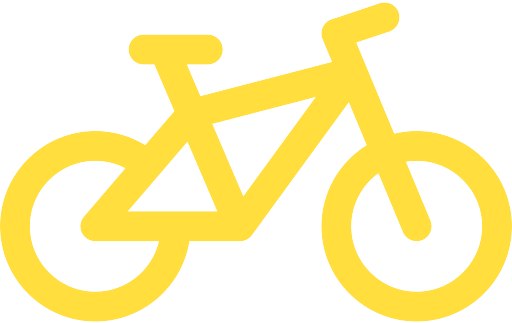

0
Net Profit0
Revenue0
Total cost0
Total OrdersTop 100
Profitable Products
Show
entries
Search:
by Team 5 - Jakarta
Click Here
The bicycle production industry in Europe is facing significant
challenges, as reflected by a 5.26% decrease in bicycle sales profits
from 2015 to 2016. This change marks a reversal from the previous
trend, where between 2014 and 2015, there was an 11.56% increase in
bicycle sales profits. This sharp decline serves as a significant
signal of a shift in consumer behavior or other factors affecting the
bicycle industry in Europe.
Through the use of an interactive
dashboard, visitors and stakeholders can gain a better understanding
of market dynamics, sales trends, and factors influencing bicycle
sales in Europe. Besides visualizing bicycle sales data patterns from
year to year through interactive graphs and diagrams, we also provide
conclusions and offer relevant recommendations to support
decision-making for bicycle industry stakeholders in Europe.
36.2K
Total Order42
State20.4M
Total Profit0
Net Profit0
Revenue0
Total cost0
Total OrdersData source: Kaggle
To increase our profit by 5-11%, we need to focus on specific countries, product categories, and customer age ranges that can make a significant contribution to increased profitability. Because when the focus is on a specific target, we can reduce the unit cost and gain more profit. We also should focus on our engagement to increase our profit.
In 2012, the United States achieved the highest profit, with products in the road bikes category being the best sellers. Analysis shows that the majority of customers were 34 years old, with a total of 385 customers, and the customer base was predominantly male.
In 2012, the United Kingdom achieved its highest profit, while the lowest profit occurred in 2013, primarily due to a drastic drop in April 2013. The most sold product category was road bikes, whereas touring bikes had the least sales. The largest customer age group was 28 years old, followed by 29 years old. Gender demographics showed a dominance of male customers, but the difference compared to female customers was minimal.
In Australia, the highest profit was recorded in 2012, while the lowest occurred in 2014, followed by a recovery in 2015. The most sold product category was road bikes, whereas touring bikes had the least sales. The largest customer age group was 28 years old, followed by 35 years old. Gender demographics showed a dominance of female customers.
In Germany, the highest profit was recorded in 2012, followed by a drastic decline in 2013 due to a significant drop in profit in August 2013. The most sold product category was road bikes, while touring bikes had the least sales. The largest customer age group was 28 years old, followed by 29 and 30 years old. Gender demographics showed a dominance of male customers.
In France, the highest profit was recorded in 2012, followed by a drastic decline from 2013 to 2014 due to continuous profit drops from January to August 2013. The most sold product category was road bikes, while touring bikes had the least sales. The largest customer age group was 29 years old, followed by 28 and 31 years old. Gender demographics showed a dominance of male customers.
In Canada, the highest profit was recorded in 2012, followed by a drastic decline from 2013 to 2014 due to continuous profit drops from February to April 2013. The most sold product category was road bikes, while touring bikes had the least sales. The largest customer age group was 32 years old, followed by 39 and 38 years old. Gender demographics showed an almost equal distribution between male and female customers, with males being slightly more predominant.
Institut Teknologi Sepuluh Nopember
Statistika
UPN "Veteran" Yogyakarta
Ekonomi Pembangunan
Univ. Islam Bandung
Matematika
Univ. Pamulang
Teknik Informatika
Univ. Mercu Buana Jakarta
Sistem Informasi
Univ. Gunadarma
Sistem Informasi
Univ. Mikroskil Medan
Sistem Informasi
Univ. Muhammadiyah Riau
Teknik Informatika
Univ. Pendidikan Indonesia
Matematika
Univ. Jenderal Achmad Yani
Teknologi Informasi
Univ. Negeri Makassar
Sastra Inggris
Univ. Sintuwu Maroso
Bahasa Inggris
Thank you for visiting our website. Your feedback is invaluable to us as we strive to enhance your experience. Please take a moment to share your thoughts and suggestions. Your input helps us to continue improving our services!